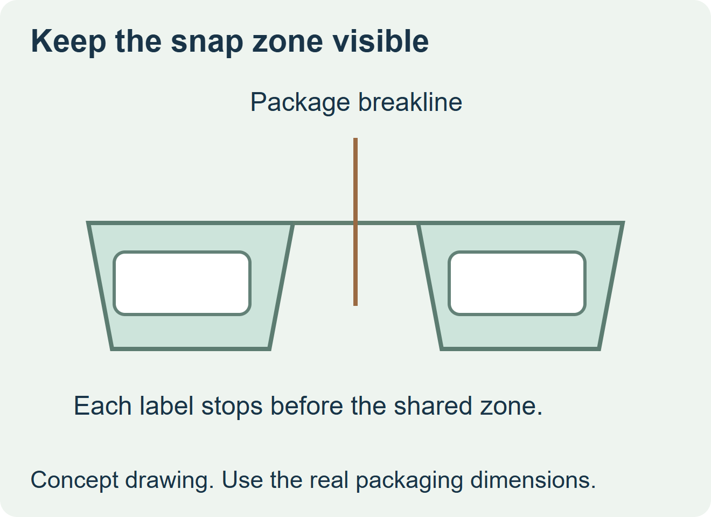
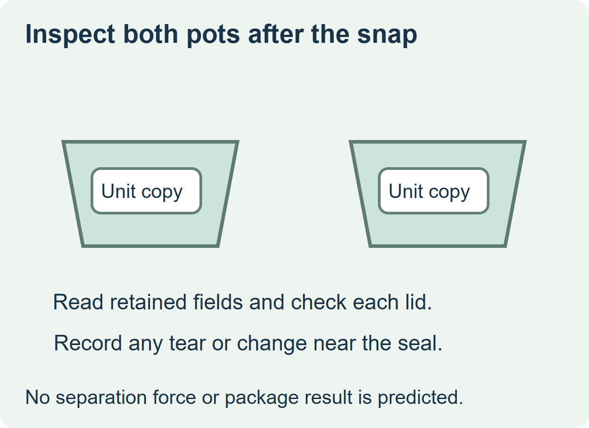

Use individual labels inside each unit’s approved landing when the pots must remain identified after separation. Add a removable pack-only component only where the buyer needs a group-level field and can confirm it will leave the intended separation and opening clear. Check the packaging system both before and after the user separates it.


Trace the breakline and the separate lid paths
Ask the packaging supplier to mark the interface between linked units, each sealing area and the intended peel or opening tab. Use the shape of the sealed and filled array. Faerch describes systems that connect packs for handling and separate into individual units. Check the actual construction and its supported directions. A label crossing the join adds an interface that should be evaluated as part of the package. Faerch snap-pack format overview
Mark both the approved landing and the expected placement range for each label. If there is a fold, overlap or lip near the join, have the equipment owner identify the reliable zone. A proposed label that narrows the separation zone or reaches a lid tab needs packaging review before an order is released.
| Field and package need | What to include in the purchase specification |
|---|---|
| A field must remain on each sealed unit after separation | Individual placement and approved copy that can be read on each detached unit. |
| A field applies only to the connected group | Approved pack-only position or removable component with its own removal instruction. |
| A label or laminate bridges the join at the proposed position | Move its footprint or qualify the intended construction and break behavior with the packaging owner. |
| Units can be sold separately | Have the responsible owner approve the intended retailer and product information on the actual retail units. |


Check which parts move when a shopper separates them
Evaluate filled packs from the actual supply. Separate units in the intended direction. Check the neighboring pot for seal damage, a pulled tab or label fragments covering the text. Inspect the detached pots in their expected reading and storage positions. Confirm the actual opening and package acceptance requirements with the packaging owner.
For a hypothetical two-pot chilled snack, a single mockup shows a brand shape across the two tops. After separation, part of the product identifier is missing from one pot. Keeping that field on the supported area of each pot answers the retained-information question. If the pack still needs a separate group identifier, price its label or carrier independently and inspect how it leaves the package.
Give each print component its own scope and quantity
List the pack-level and pot-level components, how many are needed for each SKU, and whether the line can place and inspect both. Send the actual breakline and seal map with the quote. Any specialty component or multi-pack change requires separate supplier confirmation.
Discuss the unresolved label requirement
Send filled connected and separated specimens, breakline and seal map, required retained fields, line and position limits and quantities. Review food label options and prepare a label specification inquiry. The contact page opens an email draft and lists email or WhatsApp for attachments. Supply, proof options, testing, pricing and timing require project confirmation.